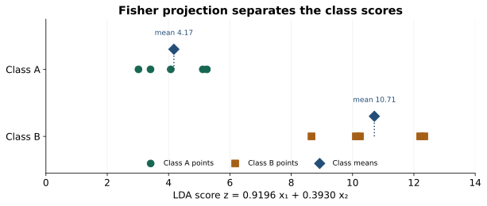

Fisher LDA: Find a Projection That Separates Classes
Expanded from PCA and LDA.pdf · View a handwritten page
The PCA guide before this one finds a direction that keeps the data's overall spread. Linear discriminant analysis (LDA) uses class labels to find a direction that separates the classes while keeping points within each class close together. We will work through the ten labeled points from the handwritten notes.
Start with the labeled points in the notes
Each point belongs to class A or B. LDA uses those labels while it chooses a direction. Here are the ten points listed on page 4 of the original notes:
| Row | Class | $x_1$ | $x_2$ |
|---|---|---|---|
| A1 | A | 4 | 1 |
| A2 | A | 2 | 4 |
| A3 | A | 2 | 3 |
| A4 | A | 3 | 6 |
| A5 | A | 4 | 4 |
| B1 | B | 9 | 10 |
| B2 | B | 6 | 8 |
| B3 | B | 9 | 5 |
| B4 | B | 8 | 7 |
| B5 | B | 10 | 8 |
Average the measurements within each class. For A, the averages are $\mu_A=((4+2+2+3+4)/5,(1+4+3+6+4)/5)=(3,3.6)$. Doing the same for B gives $\mu_B=(8.4,7.6)$. The centers differ by $(5.4,4)$. A line along that gap would put the averages far apart, but it might also spread points from the same class far apart. LDA accounts for both.
Measure spread around each class mean
To measure how spread out a class is, subtract that class's average from each point. For A1, the two differences are $(1,-2.6)$. Square each difference for the diagonal entries, then multiply the two differences together for the off-diagonal entries:
Adding the contributions from all five points in each class gives:
Add these two matrices to get the total within-class scatter:
The diagonal entries add up squared differences in each measurement; the other entries track how the two measurements vary together. “Scatter” here means a sum, not an average. Dividing the whole matrix by one shared number would change the Fisher score's scale but not its best direction. Dividing each class by a different number would change its influence when class sizes differ, so we keep the sums.
Balance separation against spread
Project each point onto a direction $w$ to give it one score, $z=w^\top x$. Fisher's criterion compares the squared gap between the two average scores with the total spread of points around their own class average scores:
A large gap is useful when points within each class stay close together. Multiplying $w$ by a constant changes the numerator and denominator by the same factor, so only its direction matters. When $S_W$ can be inverted, the best direction is proportional to $S_W^{-1}(\mu_B-\mu_A)$. We can find it by solving this linear system rather than calculating the inverse directly:
The solution is approximately $(0.44046,0.18822)$. Dividing by its length gives the unit direction $v=(0.91956,0.39295)$. A point's score is now one number: $z=v^\top x=0.91956x_1+0.39295x_2$. For A1, the score is about $0.91956(4)+0.39295(1)=4.0712$.
On this line, class A's average score is about 4.1733 and class B's is about 10.7107. The direction separates the averages while accounting for how widely points spread within each class.
Plotting all ten scores makes that separation easier to see:

import numpy as np
A = np.array([[4,1], [2,4], [2,3], [3,6], [4,4]], dtype=float)
B = np.array([[9,10], [6,8], [9,5], [8,7], [10,8]], dtype=float)
ma, mb = A.mean(0), B.mean(0)
Ac, Bc = A-ma, B-mb
within = Ac.T @ Ac + Bc.T @ Bc
w = np.linalg.solve(within, mb-ma)
v = w / np.linalg.norm(w)
print(within) # [[13.2, -2.2], [-2.2, 26.4]]
print(v) # [0.91955932, 0.39295122]Generalize the same idea to several classes
For more than two classes, keep the same two ideas: add up spread within each class, and measure how far each class average is from the overall average. Let $n_c$ be the number of points in class $c$, $\mu_c$ its mean, and $\mu$ the overall mean, weighted by class sizes:
The class counts make larger classes count more in the between-class measure. The equation $S_{\mathrm{between}}v=\lambda S_Wv$ finds directions with large separation between class means and small spread within classes. Keep the directions with the largest $\lambda$. With $C$ classes and $d$ measurements, there can be at most $\min(d,C-1)$ such directions. Two classes therefore give at most one.
What this projection does and does not give us
Fisher's calculation uses class means and spread; it does not require the data to follow Gaussian distributions. It can miss a pattern when two classes have the same average or form curved shapes. If the within-class scatter matrix cannot be inverted, regularization can make the calculation more stable.
Fit any preprocessing and the projection using training data, then reuse them for new points. This gives each point a score, but not a class label; a classifier needs an extra rule to make that choice. The next guide shows LDA as a Gaussian classifier, with class priors, a decision boundary, and a worked prediction.
From the handwritten notes
This guide expands the relevant material in PCA and LDA.pdf. The complete original contains both topics; the blog treats PCA, LDA projection, and LDA classification separately.
View original page 3

Further reading: